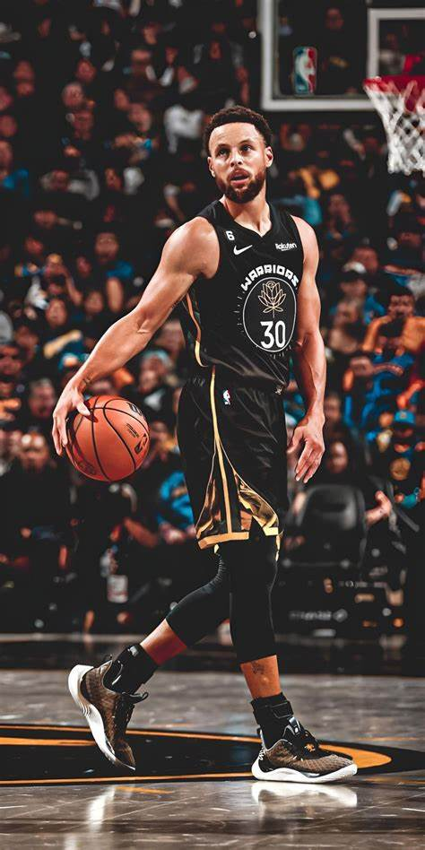

Algunos de los jugadores más icónicos de los Warriors incluyen a Wilt Chamberlain, Stephen Curry y Klay Thompson. Pero a pesar de tener varios jugadores icónicos, el que más cabe destacar es Stephen Curry quien ha ganado 4 anillos de los 7 que han ganado los Golden State Warriors
